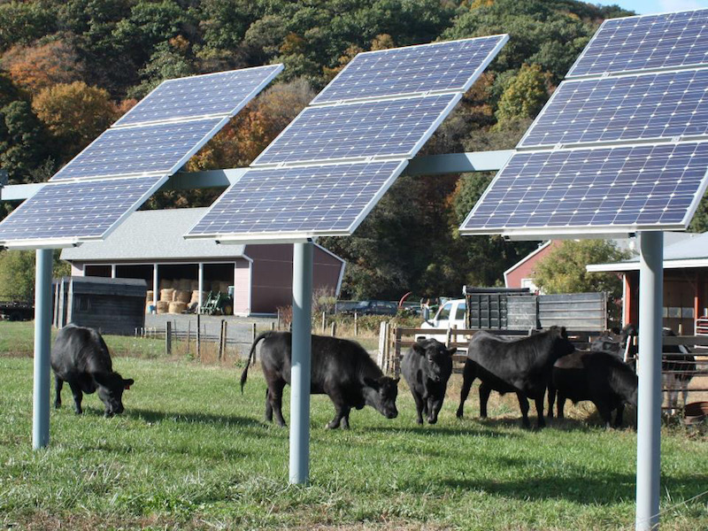
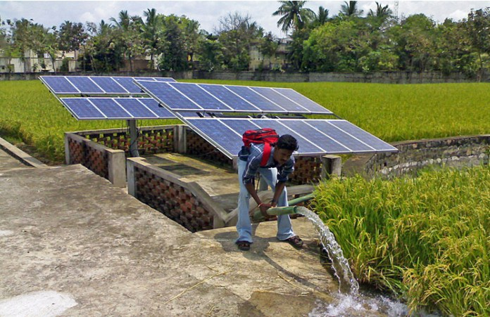
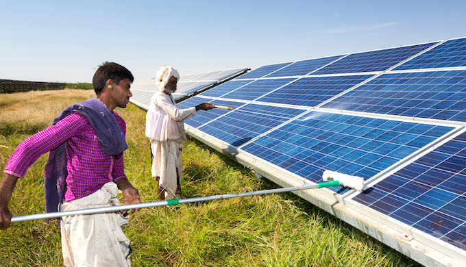

Harness the power of the sun to fuel the future of farming.
The Sun has been worshiped as a life-giver to our planet since ancient times. India is endowed with vast solar energy potential. About 5,000 trillion kWh per year energy is incident over India's land area. Solar photovoltaics power can effectively be harnessed providing huge scalability in India.
The Indian government revised the Solar Mission in 2014. It targets for 100 GW installed capacity of solar electricity by 2022. To reach this ambitious target, the government announced several policies.

How solar energy can coincide with crop and animal agriculture.
Researchers have found that plants will grow and produce below elevated solar panels, and animals can still graze the land beneath the panels. Solar energy in agriculture has become possible, and it has proven results. Plus, it allows another stream of income for farmers.
The University of Massachusetts has been researching agrivoltaics since 2008. In 2010, they put 70 solar panels in place, elevated seven feet above farmland, with zero disruption to the soil. Installers left enough space between the panels to allow sunlight to reach the plants below.
For landowners, the solar panels provide self-generated energy, which decreases the cost of utility bills. The panels also block the wind and limit soil erosion to maintain soil health. Most agriculture farms are already on level ground, saving preparation costs.
Despite less sunlight reaching the crops beneath the solar installations, they still yield well. The University of Massachusetts has grown grazing grasses, peppers, tomatoes, beans and cilantro under such setups effectively.

